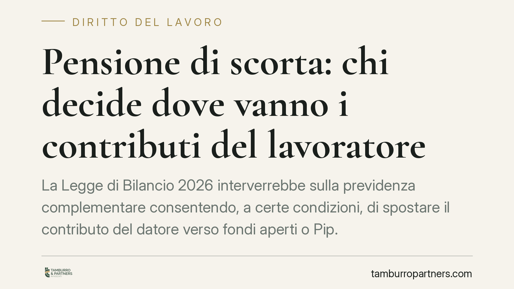

Pensione di scorta: chi decide dove vanno i contributi del lavoratore
La Legge di Bilancio 2026 interverrebbe sulla previdenza complementare consentendo, a certe condizioni, di spostare il contributo del datore verso fondi aperti o Pip. La portabilità della propria posizione, però, esiste già. Capire cosa cambia davvero, e cosa resta da verificare sul testo definitivo, è decisivo prima di assumere scelte difficili da revocare.

Il fatto
Il tema è tornato al centro del dibattito: a chi spetta decidere dove confluiscono i soldi destinati alla "pensione di scorta", cioè alla previdenza complementare?
Secondo quanto anticipato in relazione alla Legge di Bilancio 2026, il lavoratore iscritto da un certo periodo a un fondo pensione negoziale potrebbe trasferirsi a un fondo aperto o a un Piano individuale pensionistico (Pip) mantenendo il contributo del datore di lavoro.
Una precisazione è doverosa. Si leggono riferimenti a una decorrenza fissata al 31 ottobre 2026 e a un requisito di iscrizione di almeno due anni. Allo stato, questi dettagli vanno confermati sul testo definitivo pubblicato in Gazzetta Ufficiale: li riportiamo come dati da verificare, non come certezze.
Inquadramento normativo
La cornice resta il D.lgs. 5 dicembre 2005, n. 252, che disciplina le forme pensionistiche complementari.
Due norme sono centrali. L'art. 14 regola la portabilità della posizione individuale: già oggi il lavoratore, trascorso il periodo minimo di permanenza, può trasferire la propria posizione da una forma pensionistica a un'altra. L'art. 8 disciplina il finanziamento, cioè le fonti contributive, compreso il contributo a carico del datore previsto dai contratti collettivi.
Qui si innesta il punto chiave. La portabilità della posizione non è una novità: esiste da sempre nell'impianto del 252. Ciò che la riforma intende introdurre è diverso e più circoscritto: l'estensione della portabilità al contributo datoriale, che oggi il lavoratore rischia di perdere uscendo dal fondo negoziale di riferimento.
Resta aperto un nodo interpretativo serio: il rapporto tra la nuova facoltà e le clausole dei contratti collettivi che àncorano il contributo del datore all'adesione al fondo negoziale di categoria. Come si concilierà la libertà individuale di trasferimento con l'autonomia collettiva? È il profilo che andrà letto con attenzione nel testo definitivo e nelle indicazioni della COVIP, autorità di vigilanza sui fondi pensione.
Implicazioni pratiche
Per il lavoratore il tema non è solo "dove" portare i contributi, ma a quali costi.
I fondi negoziali, per loro natura, tendenzialmente non perseguono finalità di lucro e operano su base collettiva: ciò si riflette, mediamente, su costi di gestione contenuti. I fondi aperti e i Pip, offerti da banche e assicurazioni, possono presentare strutture di costo più articolate.
Lo strumento di confronto è l'ISC (Indicatore Sintetico dei Costi), pubblicato da ogni forma pensionistica e consultabile sul sito COVIP. L'ISC esprime quanto incidono i costi sul rendimento annuo, per diverse durate di permanenza.
Attenzione all'orizzonte temporale. Una differenza anche minima di ISC, composta su venti o trent'anni, può erodere una quota rilevante del capitale finale. Su archi lunghi, qualche decimo di punto di costo in più si traduce in migliaia di euro di prestazione in meno.
Il mantenimento del contributo datoriale, se confermato, cambia il calcolo: non si tratta più di scegliere tra restare nel fondo di categoria o rinunciare al contributo dell'azienda. Ma la convenienza va valutata al netto dei costi effettivi della nuova forma, non solo sulla base di rendimenti attesi.
Cosa fare in concreto
- Verificate la fonte normativa: prima di qualsiasi decisione, controllate decorrenza e requisiti sul testo definitivo in Gazzetta Ufficiale e sulle istruzioni COVIP.
- Confrontate gli ISC della vostra posizione attuale e delle alternative, usando la stessa durata di permanenza prevista.
- Leggete il vostro CCNL: individuate la clausola che regola il contributo datoriale e le condizioni cui è legato.
- Simulate l'impatto di lungo periodo: chiedete al fondo una proiezione della prestazione attesa a parità di versamenti, confrontando le opzioni.
- Non formalizzate il trasferimento in via d'urgenza: la portabilità incide su decenni di accumulo e, una volta eseguita, può richiedere tempo e costi per essere ricostruita.
La scelta tra fondo negoziale, fondo aperto e Pip non ha una risposta valida per tutti: dipende da costi, profilo di rischio, orizzonte temporale e condizioni contrattuali individuali.
Disclaimer
Contributo informativo a cura di Tamburro & Partners - Avv. Giuseppe Tamburro. Non costituisce parere legale.
Ogni storia di lavoro ha i suoi tempi.
Se gestisci HR e vuoi un confronto su contenzioso, ispezioni o licenziamenti, scrivi allo studio. Ti rispondiamo entro un giorno lavorativo.